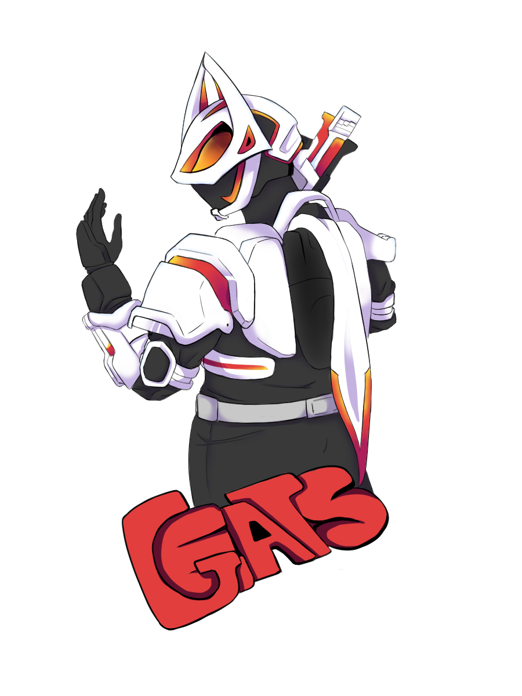
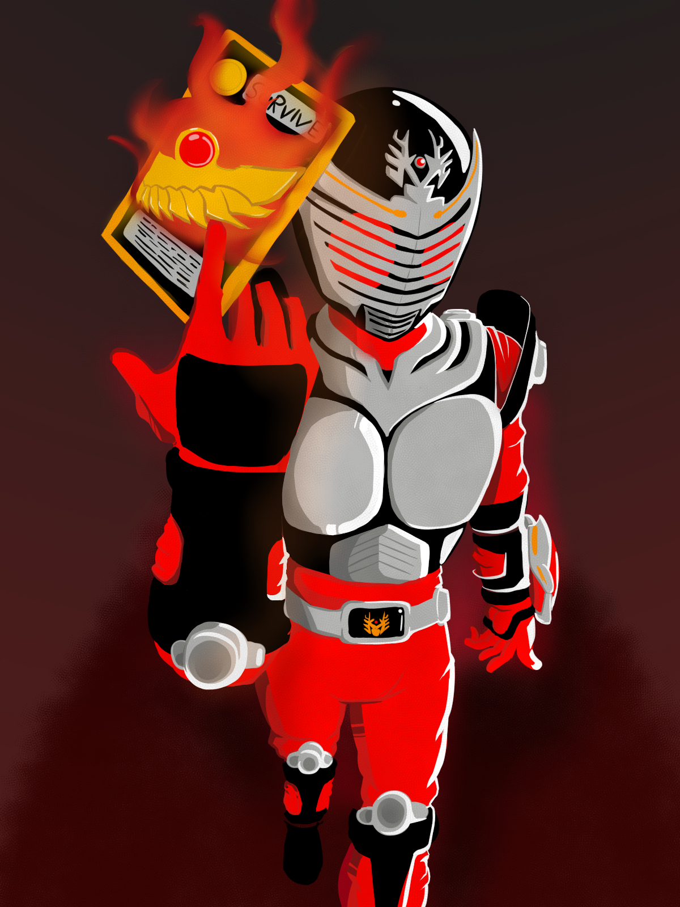

[Geats]
[Fanart de Kamen Ride Geats, publicado en instagram.]
DISPONIBLE PARA NUEVOS PROYECTOS
Soy Juan José Ignacio Díaz Merino, estudiante/desarrollador de videojuegos. Me interesa el arte conceptual, diseño de personaje y disfruto diseñando personaje.
01 / MIS ULTIMOS TRABAJOS
Una selección de mis ultimas Ilustraciónes personal en las que he trabajado.

[Fanart de Kamen Ride Geats, publicado en instagram.]

[Fanart de Kamen Ride Ryuki, publicado en instagram.]

[Fanart de TMO Opera de uma musume, publicado en instagram.]
02 / SOBRE MÍ
02Estoy estudiando en la universidad Universidad Bernardo O'Higgins, en la carrera de realidad virtual y juegos digitales, me espacializo en Ilustración, de diseño de personaje y art conceptual
Contactarme ↗03 / HABILIDADES
Herramientas y conocimientos que utilizo en mis proyectos.
[Clip studio paint] · [Diseño de personaje/ecenario] · [Arte conceptual]
↗[Aseprite] · [Diseño de personaje/objeto/ecenario] · [Animación]
↗